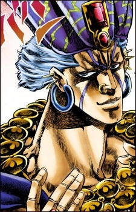

Дата рождения: Около 90,000 до Н. Э
Возраст: Около 92,000 лет
Раса: Человек из колонны
Пол: Мужской
Национальность: Коренной американец

Эйсидиси
Информация
Описание
Эйсидиси (エシディシ Eshidishi) — один из ключевых антагонистов Боевом стремлении.
Человек из колонны, ему свыше 92 000 лет. Был найден нацистами под Колизеем в Риме. Может увеличивать температуру тела до 500 ° С, его кровь может принимать форму игл, которая разъедает жертву изнутри. Имеет неуравновешенный характер и впадает в истерику при виде собственной раны, чем вводит в ступор противника. Бывал в древнем Китае и знал Сунь-цзы. Занимался поиском красного камня и узнал, что он у Лизы-Лизы. Во время сражения с Джозефом, его тело было уничтожено, но мозг стал паразитировать на теле Джозефа, который переместился в тело Сьюзи Кватро, овладев её телом и предупреждая «умру я — умрёт она». После чего отправил камень Эйши в Швейцарию. Он также хотел уничтожить главных героев, но Джозеф окончательно уничтожает мозг Эйсидиси, оставив под солнцем, не навредив Сьюзи.
Человек из колонны, ему свыше 92 000 лет. Был найден нацистами под Колизеем в Риме. Может увеличивать температуру тела до 500 ° С, его кровь может принимать форму игл, которая разъедает жертву изнутри. Имеет неуравновешенный характер и впадает в истерику при виде собственной раны, чем вводит в ступор противника. Бывал в древнем Китае и знал Сунь-цзы. Занимался поиском красного камня и узнал, что он у Лизы-Лизы. Во время сражения с Джозефом, его тело было уничтожено, но мозг стал паразитировать на теле Джозефа, который переместился в тело Сьюзи Кватро, овладев её телом и предупреждая «умру я — умрёт она». После чего отправил камень Эйши в Швейцарию. Он также хотел уничтожить главных героев, но Джозеф окончательно уничтожает мозг Эйсидиси, оставив под солнцем, не навредив Сьюзи.
Манга
Аниме